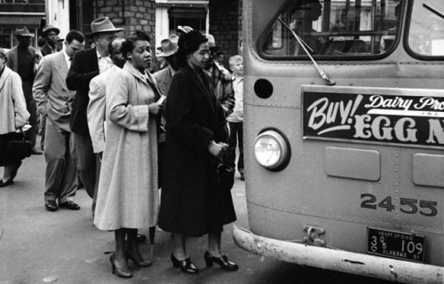

Social Justice
Rosa Parks
Charlottesville
On December 1st, 1955 Rosa Parks sat in the "whites only" part of the bus. When told to mov she refused and was jailed. However, her actions helped inspire numerous afro-americans to stand up and argue against racially unjust laws. She went on to change history and give black people confidence.
On 2017 a large group of white supremacists started a riot. During said riot, they yelled things such as "The Jews will not replace us" and "Send them back." They started multiple fights and 11 people were arrested. This is just one example of a modern day attack on people of color.
